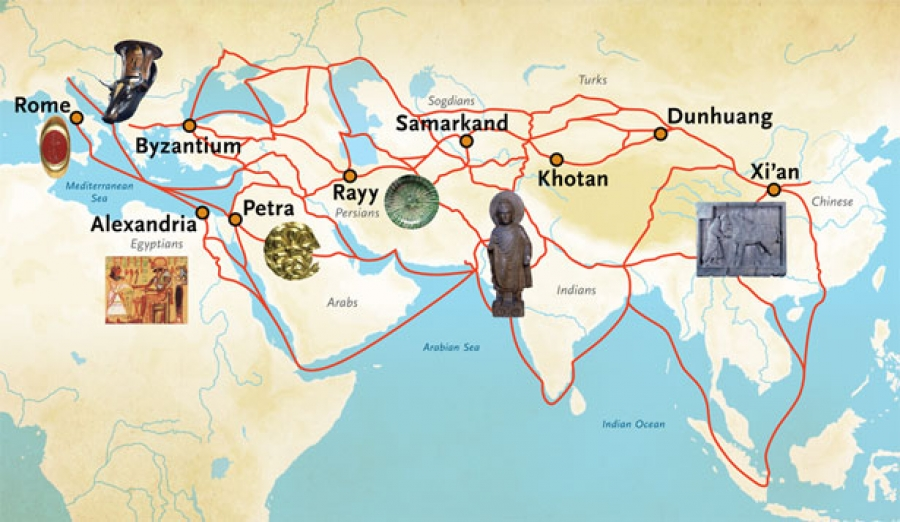
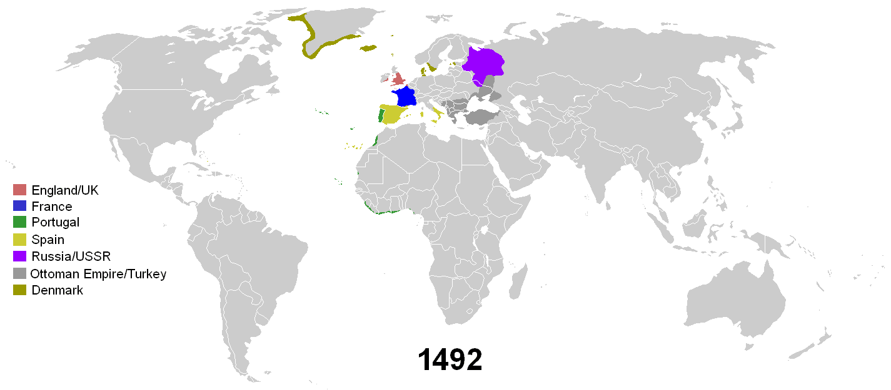

Transportul in Antichitate si Evul Mediu
Transportul Maritim
Transportul maritim a avut o importanță semnificativă în Evul Mediu și în Antichitate, jucând un rol crucial în dezvoltarea și prosperitatea civilizațiilor antice și medievale. Iată câteva aspecte relevante ale transportului maritim în aceste perioade istorice:
Comerțul maritim: Transportul maritim a fost motorul principal al comerțului internațional în Antichitate și Evul Mediu. Marile râuri, mări și oceane au fost utilizate ca rute comerciale pentru transportul mărfurilor între diferite regiuni și continente. De exemplu, Drumul Mătăsii, care lega Europa de Asia, și ruta comercială din Mediterana au fost două dintre cele mai importante rute maritime din acele perioade, facilitând schimburile economice și culturale între est și vest.

Explorarea și colonizarea: Transportul maritim a permis explorarea și colonizarea noilor teritorii. Navele au fost folosite pentru a descoperi și a explora noi insule, continente și zone coastale. De exemplu, navigațiile lui Cristofor Columb și ale altor exploratori au dus la descoperirea și colonizarea Americii de către europeni în Evul Mediu timpuriu.

Comunicarea și schimburile culturale: Navele au fost, de asemenea, importante pentru comunicare și schimburile culturale între diferite civilizații. Ele au fost utilizate pentru a transporta oameni, idei, religii și tehnologii între diferite regiuni și culturi. Acest lucru a contribuit la împrăștierea cunoașterii și a ideilor și la îmbogățirea culturală a societăților medievale și antice.
Apărarea și controlul teritoriilor maritime: Controlul asupra rutelor maritime a fost esențial pentru puterea și dominația unor imperii și state în Antichitate și Evul Mediu. Flotele maritime au fost utilizate pentru a proteja interesele comerciale, pentru a asigura siguranța transportului și pentru a proiecta puterea militară în întreaga lume. De exemplu, flota romană a fost una dintre cele mai puternice din lumea antică, asigurând controlul asupra Mării Mediterane și a rutelor comerciale din regiune.